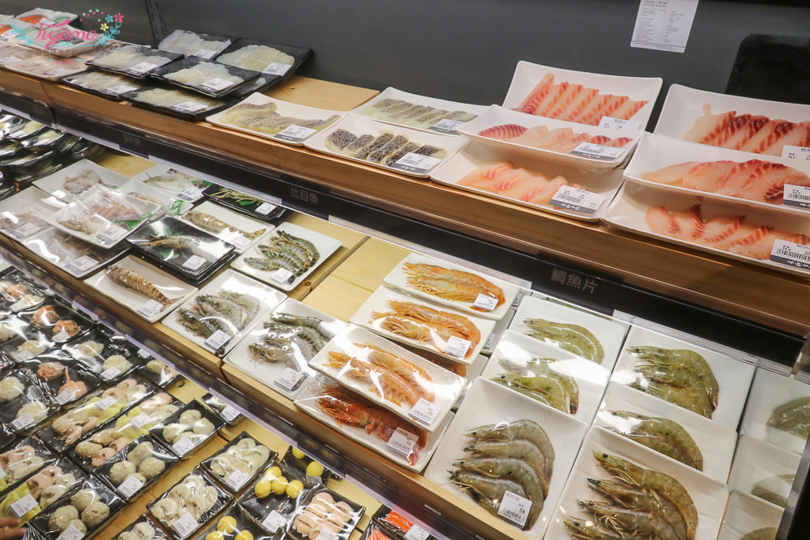

最近最熱門的鍋物就屬「祥富水產 沙茶火鍋超市」最夯！！
產地直送生猛海鮮、嚴選肉品、各式蔬菜、火鍋料，共70種以上的食材任您挑，一種自己吃的火鍋自己挑的概念！！
看上哪一盤就選哪一盤，拿著籃子現場挑，享受逛超市吃火鍋的樂趣！
冰櫃內的食材，完整包裝，排列整齊，每盤的新鮮度看得見！！
來祥富就是要嗑海鮮，光是蝦的種類就讓我的選擇困難症發作了，哈哈~

餐廳選用安全性高的IH爐，桌面中間是垃圾桶投入口，桌子側邊下方的拉層，可放置籃子(上)和空盤(下/藍)，隨時保持桌面的空間和乾淨度，用餐起來方便舒適！！
祥富水產沙茶火鍋超市，產地直送新鮮海產，邊挑邊看到這親民的價格都會偷笑，讓顧客依自己的喜好預算自己選，
怪不得人氣居高不下！結完帳到要開吃時，已經快客滿，這人潮一整個誇張，一度以為今天是假日！！心動的朋友，快選一天試試~
肉圈圈
星野肉肉鍋
拾七石頭火鍋
心得